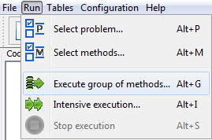
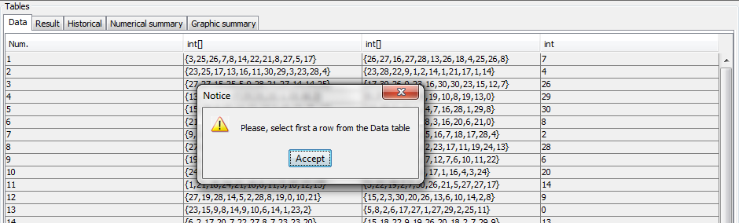
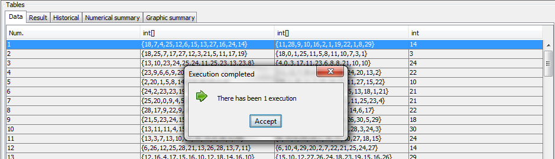
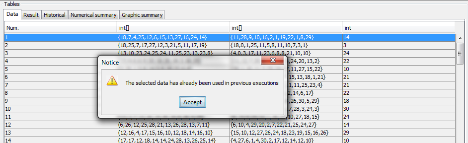
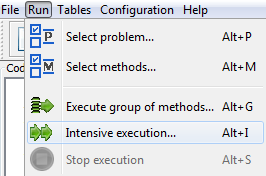
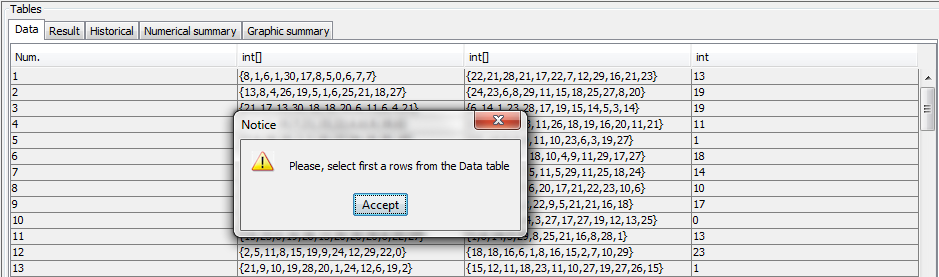
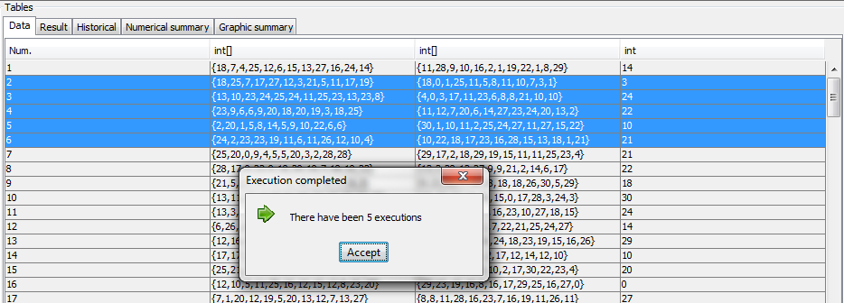
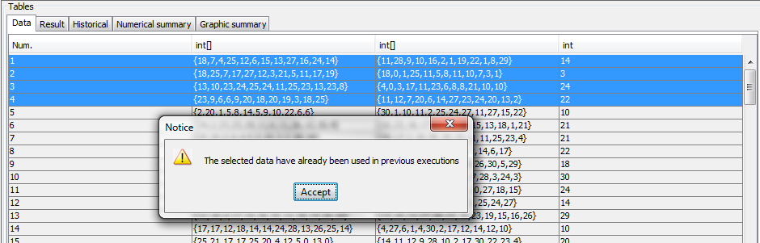
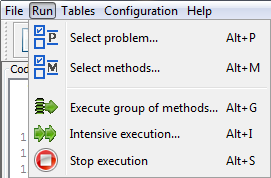
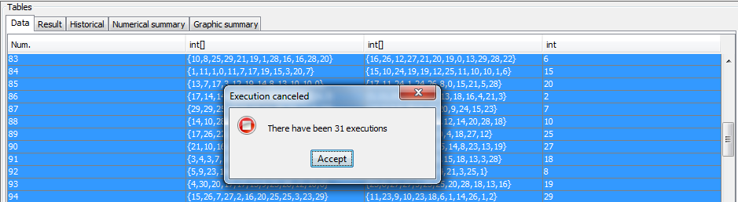

return
Run
Running a set of methods with a single data
Select from the menu bar.

Make an execution of a group of methods with a single data. It gives a choice of methods:

If the execution is completed successfully message is displayed:

And if a data that has been previously used is selected, it appears the dialog:

Running a set of methods whit a selection of data
Select from the menu bar.

Make executions of a group of methods with several data. If there are several methods
under the symbol selected, it hurts us choose methods:

If the executions are completed successfully message is displayed:

And if a data (or data) that has been previously used is selected, it appears the dialog:

Stop execution
Select from the menu bar.

Stop ongoing executions when you want with this option.

September 16, 2016